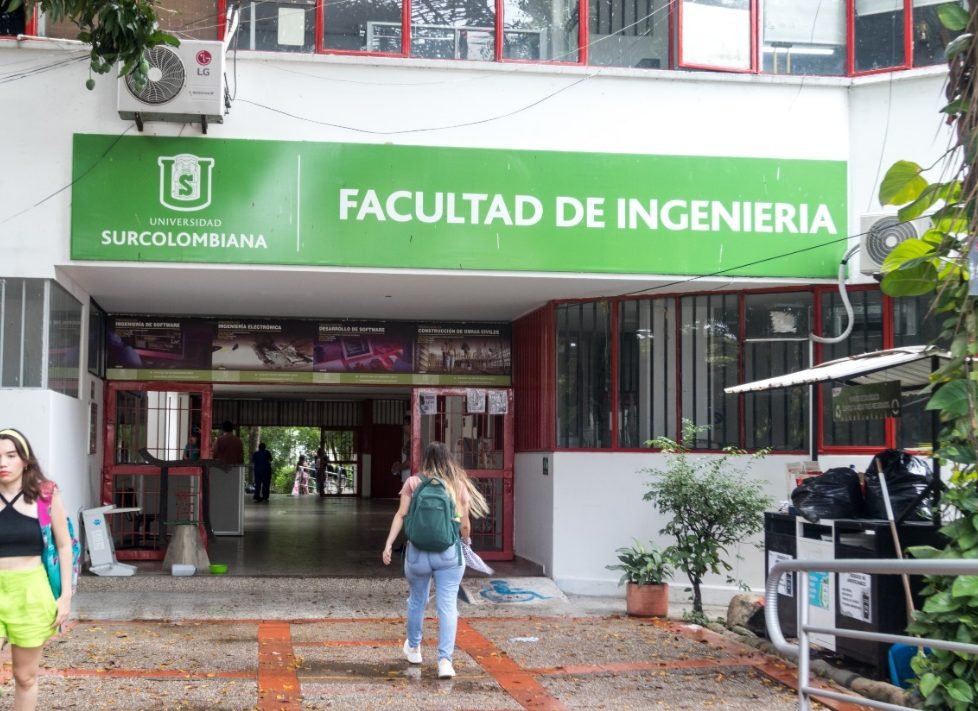

LEGO
Pensamiento lógico, algoritmia y control de sensores y actuadores con robótica modular.
Unidad 1El eje fundacional del plan de estudios. Aquí no se estudia la ingeniería desde afuera: se recorre el ciclo completo de un producto electrónico, desde la idea hasta el prototipo que funciona, bajo el marco CDIO.

La asignatura se articula bajo los lineamientos del Estándar 4 de la iniciativa CDIO: Concebir, Diseñar, Implementar y Operar. Su estructura pedagógica se aleja de la instrucción pasiva para adoptar un enfoque de aprendizaje basado en proyectos, donde el estudiante experimenta el ciclo de vida completo de un producto electrónico desde su etapa inicial.
El desarrollo temático integra progresivamente tres niveles de complejidad tecnológica. Primero se emplean plataformas de robótica modular para asentar las bases del pensamiento lógico, la mecánica y la algoritmia sin la barrera de entrada de la electrónica compleja. Luego llega la transición a sistemas embebidos, con interacción directa con sensores y actuadores a nivel de componente. El curso culmina con el diseño y manufactura de Circuitos Impresos.
El Huila atraviesa un proceso de transformación productiva con focos estratégicos en tecnificación agroindustrial, piscicultura de precisión y transición energética. Ese contexto demanda ingenieros con capacidad operativa para intervenir sistemas reales desde etapas tempranas.
Al enfrentar al estudiante a proyectos de diseño e implementación desde el primer semestre, el curso valida su perfil profesional y reduce la deserción temprana por falta de vinculación vocacional.
Cada etapa se apoya en la anterior. Se empieza programando comportamiento sin cablear nada y se termina soldando componentes sobre una PCB propia.
Pensamiento lógico, algoritmia y control de sensores y actuadores con robótica modular.
Unidad 1Microcontroladores, entradas y salidas, señales analógicas y digitales, sintaxis C++.
Unidad 2Captura esquemática, huellas, ruteo, archivos de manufactura y técnicas de soldadura.
Unidad 3Integración de los subsistemas mecánico, electrónico y de control en una sola solución.
Unidad 4El mismo ciclo se repite en los retos de robótica y en el proyecto integrador. Cada fase tiene entregables propios y una revisión antes de avanzar.
Registro de las sesiones de robótica y de los montajes con Arduino desarrollados durante el semestre.
Guías de taller, inventario del kit EV3, herramientas de simulación y las guías de los dos proyectos del curso.

{kind=link}
{kind=link}
{kind=link}